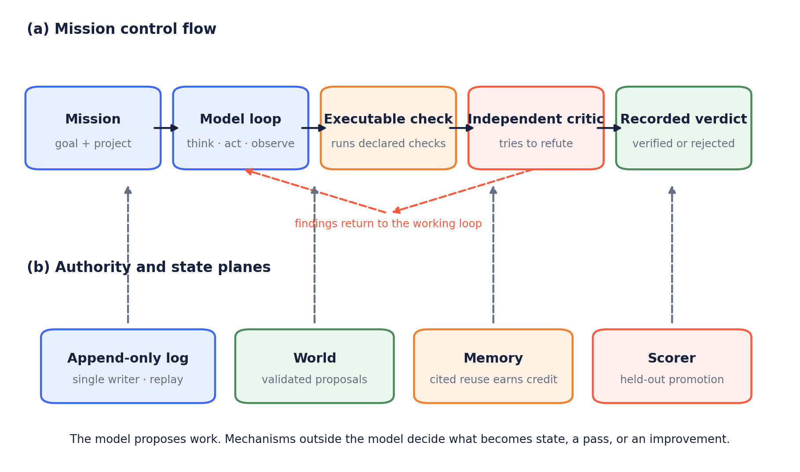
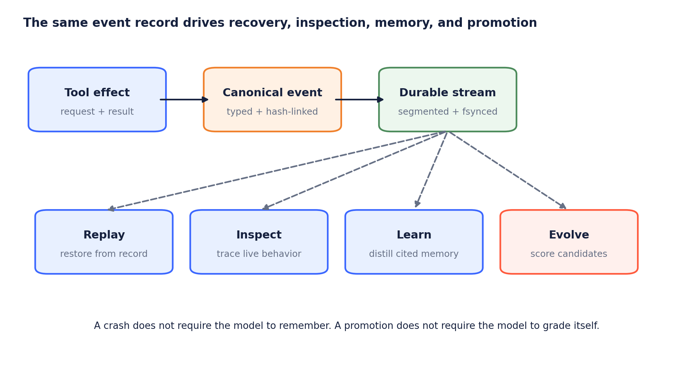
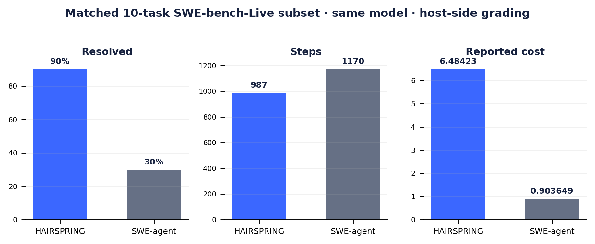

Authority outside the model
A replayable agent harness for work that must survive its own confidence
Language models can act through tools, revise artifacts, and run for long periods. The hard part is deciding what counts. A model can mistake a plausible answer for a correct one, a passing local probe for the requested outcome, or a useful change for an improvement. HAIRSPRING moves those decisions into a substrate the model does not control. Executable checks close missions. An independent critic attempts to refute the submitted artifact. A single-writer, hash-chained event log makes the run replayable. World and memory services admit validated state. A pinned scorer promotes changes only after held-out trials. On a matched ten-task SWE-bench-Live subset, HAIRSPRING resolved nine tasks and SWE-agent resolved three with the same model and host-side grading. The result isolates a useful design point: the common think-act-observe loop is not the differentiator. Authority is.
Evidence status. PROVEN marks direct source, test, or raw-run evidence at commit 4273dcc. EXTRAPOLATED marks a mechanism-level inference. ESTIMATE marks a target or unmeasured prediction.September 2026 · Source revision 4273dccf6d00fa7
An agent harness usually gives a model a goal, a tool set, and a loop. The model thinks, acts, observes, and eventually says it is done. That loop is useful, but it leaves the most important decisions inside the component most likely to be confidently wrong.
HAIRSPRING separates work from judgment. The model proposes actions and artifacts. Other mechanisms decide whether the work changes state, closes the mission, enters shared memory, or replaces the current harness policy. This separation creates five authority boundaries:
The checker closes. The submitted artifact must satisfy executable checks.
The critic refutes. A fresh model context receives the goal and artifact, not the worker’s rationale, and looks for a blocking defect.
The log is the state. One writer appends canonical, hash-linked events. Recovery replays the record.
The world validates. Agents submit proposals; the world service records accepted effects and reusable artifacts.
The scorer promotes. Candidate policies run on held-out assays against a pinned scorer. The candidate cannot grade itself.
PROVEN The implementation contains these paths in hs-loop, hs-log, hs-world, hs-memory, hs-scorer, and hs-selfmod. The workspace test suite exercised 994 named tests at the evaluated revision; the complete run reported 992 passed and zero failed, with two non-test listings excluded by Cargo’s harness output.

Figure 1 shows two coupled systems. The upper path runs a mission. The lower path owns durable authority. The worker cannot write a passing verdict or a promotion record directly.
A mission binds a plain-language goal to a project root, tools, provider configuration, checks, cost accounting, and a durable run directory. The model calls typed tools. Tool requests and results become events. The worker submits an answer only after declaring its checks atomically with the submission. The checker restores the judged workspace, runs the checks, and then invokes the critic. A checker pass followed by no critic refutation closes the mission as verified. A failure returns evidence to the worker for repair.
The ordering matters. Earlier versions accepted answer text before the final check declaration. The evaluated revision closes that race: answer.submit accepts and persists inline checks before judgment. The exact ten-step failure shape that exposed the problem is now a regression test.
Tools are processes behind an NDJSON protocol. The kernel registers their capabilities and the mission surface is generated from that registry. On Linux, bubblewrap exposes the project and required toolchain caches while making system paths read-only. On macOS, the runner emits a Seatbelt profile. Startup fails if confinement is unavailable rather than silently running unconfined.
The edit path uses anchored or apply-patch mutations instead of unconstrained file replacement. Tool execution, model calls, and child-agent work are charged to the mission record. The terminal interface shows the goal, transcript, tools, agents, evidence, cost, and final state from the same record used for recovery.
The critic is adversarial but asymmetric. It may block a pass by producing a grounded finding; it cannot approve work on its own. It runs in a fresh context and, on the production path, under a read-only operating-system identity. An abnormal critic exit fails closed. Verdict records distinguish a verified result from a ratchet-capped result or verifier malfunction so reporting cannot turn a machinery problem into success.
PROVEN Regression tests cover the critic’s reachability from the default terminal path, read-only execution, abnormal-exit behavior, evidence visibility, and verdict labels.
A parent can spawn bounded asynchronous children. Children share world and memory planes, but may not recursively delegate. Each child books cost against the parent and joins before mission close. Agents do not write shared truth directly: world proposals pass a validation boundary first. Validated skills can be reused by another child without a direct message between them.
Memory stores extracted records in a global knowledge base. A later citation increments a record’s score; a served but unused record decrements it. This is a behavioral signal, not a claim that the memory is correct. Citation provenance stays attached to the record.
The inner loop improves a task artifact. The outer loop proposes changes to policy, runs candidate and parent on held-out tasks, records traces and scores, and promotes only when the candidate wins under the pinned rule. Two observed policy promotions preserved equal pass counts while reducing total steps from 94 to 52 and then from 76 to 41. These are small, two-task held-out assays, not population-level estimates.

A transcript explains what a model said. A run record must reconstruct what happened. HAIRSPRING canonicalizes typed events, stores large payloads by content hash, appends segmented streams with fsync durability, detects torn tails, and replays from a consistent prefix. Plugins cannot append directly; the loop is the sole writer.
That constraint simplifies recovery and audit. A resumed mission carries the prior transcript, tool results, counters, ledger, and billed cost rather than starting a cosmetically similar new mission. Mid-run steering becomes another event. Model or executor changes are recorded as infrastructure changes, not credited as policy fitness.
PROVEN Tests inject torn tails, corrupt registry markers, duplicate clock values, dead plugins, interrupted migrations, and replay after promotion. Byte-exact recovery and single-writer fencing are asserted at the storage boundary.
We report measurements only when the raw artifact identifies the task, outcome, steps, cost, and judging path. The principal comparison uses the same ten SWE-bench-Live tasks, the same model family, and host-side fail-to-pass checks. Each system operated through its native interface. This is a harness comparison on one curated subset, not a leaderboard claim.

| System | Resolved | Agent steps | Wall time | Cost (USD) |
|---|---|---|---|---|
| HAIRSPRING | 9/10 | 987 | 8.13 h | 6.48 |
| SWE-agent | 3/10 | 1,170 | 1.00 h | 0.90 |
PROVEN HAIRSPRING’s single failure was a two-hour timeout on haystack-8619. After preflight and judgment defects were fixed, the 49-task continuation closed 48 valid tasks; one instance was excluded because its test patch declared an already tracked file as new. The ten-task table remains the clean matched comparison and is not replaced by that later engineering run.
The result supports one mechanism claim: executable judgment plus critic-guided repair can recover tasks that a cheaper flat loop leaves unresolved. It does not isolate every subsystem. In particular, a parallel-execution seam produced no benefit in the first controlled arm and was reverted. HAIRSPRING therefore does not credit the result to parallelism.
| Promotion | Candidate steps | Parent steps | Relative reduction |
|---|---|---|---|
| Cycle 1 | 52 | 94 | 44.7% |
| Cycle 2 | 41 | 76 | 46.1% |
PROVEN The promotion journals retain parent and candidate text, hashes, trace stream identifiers, decision, and reason. EXTRAPOLATED Larger gains should not be assumed: the sample is four task outcomes across two successive assays.
| Measurement | Command |
|---|---|
| 70,429 Rust lines; 14 crates | python3 paper/reproduce.py source |
| 994 named tests | cargo test --workspace --locked -- --list |
| 992 passed; 0 failed | cargo test --workspace --locked --no-fail-fast |
| Matched benchmark | python3 paper/reproduce.py benchmark |
| Paper PDF | cd paper && make clean all |
Clippy is not reported as clean at this revision. Running cargo clippy –workspace –all-targets –locked – -D warnings produced 50 failures under the current toolchain, including numeric-cast and needless-borrow lints. The test suite remained green. This distinction is intentional: a passing test suite does not make a different quality gate pass.
SWE-agent is the strongest reproducible incumbent in the local software-engineering evaluation because it provides a public implementation, a defined agent-computer interface, and an executable run path. The table below compares responsibilities rather than product slogans.
| Responsibility | HAIRSPRING | SWE-agent |
|---|---|---|
| Tool interface | Typed registry; generated mission surface | Purpose-built agent-computer interface |
| Mission close | Executable checks plus independent refutation | Agent submission, then external grading |
| Recovery | Event replay with counters, cost, transcript, tools | Trajectory artifacts |
| Shared state | Validated world proposals and scored memory | No native authority plane |
| Parallel agents | Bounded children with folded cost | Single-agent reference path |
| Harness evolution | Held-out candidate/parent assays | Outside harness |
| Observed result | 9/10 at $6.48 | 3/10 at $0.90 |
HAIRSPRING trades cost and latency for a stronger in-run judgment path. SWE-agent remains the simpler and cheaper choice when external grading already supplies the authority and recovery, memory, and self-modification are outside the job.
Stellar Colosseum organizes research into strategy exploration, a readiness gate, a typed proof-section dependency graph, parallel local construction, and global verification. Its most transferable idea is not a fixed many-agent tree. It is explicit control over when a strategy is mature enough to decompose and where a verifier’s finding should return.
HAIRSPRING already supplies the substrate needed by such a controller: replayable state, executable checks, a fresh critic, bounded live children, shared world and memory planes, accounting, and held-out evolution. It does not yet implement Colosseum’s research-proof control plane. Missions are flat; critic feedback is routed as whole-mission prior gaps; candidates are selected or compared rather than constructively synthesized with their objections; no typed section DAG localizes repair to an affected closure.
EXTRAPOLATED A research mode can be built above the existing authority boundaries: explore → readiness decision → typed dependency graph → eligible child solves → global verification → affected-section repair or renewed exploration. The existing whole-artifact critic should remain final authority. Fixed 32- or 16-leaf trees should not become defaults without matched-compute evidence.
The most important HAIRSPRING results came from failures that crossed subsystem boundaries while local tests stayed green. Examples include a tool advertised under one name and registered under another, a production mission accidentally running the benchmark’s amnesiac baseline arm, a child process tree that recursively delegated until the host reached roughly 7,800 processes, and a checker whose environment caused zero tests to run while the agent kept repairing a correct patch.
These failures changed the test rule. A mechanism is not accepted because its crate test passes. The regression must reproduce the way a model reaches it through the installed terminal path, with the actual registry, sandbox, project root, judgment order, and rendered state. The current suite contains these seam tests alongside unit tests.
The strongest headline comparison is small. Ten curated SWE-bench-Live tasks establish a measured difference on that subset, not general software-engineering superiority. There are no repeated seeds or confidence intervals.
Verification is expensive. HAIRSPRING spent about 7.2 times as much as SWE-agent on the matched subset and took longer. The evaluation does not yet trace critic cost and steps round by round in older runs.
Self-improvement is policy-level. The system can propose and promote prompt or policy changes. It cannot yet modify and safely promote its own Rust implementation.
Memory use is partly behavioral. End-to-end write and recall paths are proven, including cross-child reuse. Whether a capable live model chooses the right memory at scale remains unmeasured.
The research controller is flat. There is no explicit strategy-readiness state, typed section dependency graph, or section-addressed defect routing.
Platform coverage is incomplete. Linux is exercised on the build box. The project currently has no macOS continuous-integration home.
Static quality is not clean at this revision. Tests pass, but current pedantic Clippy fails. The paper reports both facts.
The repository includes the paper source, generated figures, raw matched-run records, and a small reproduction script. The commands below do not call a paid model.
git clone https://github.com/tensorbend-instinct/hairspring.git
cd hairspring
git checkout 4273dccf6d00fa727b01fcbdedc6773ace9eca12
# Build and execute the test suite
export PATH="$HOME/.cargo/bin:$PATH"
cargo test --workspace --locked --no-fail-fast
# Recompute paper metrics from checked-in raw artifacts
python3 paper/reproduce.py benchmark
python3 paper/reproduce.py source
# Render the manuscript
cd paper && make clean allThe SWE-bench-Live comparison requires the original task repositories, test patches, provider credentials, and runner environments. The checked-in evidence files are the raw per-task records used for Figure 3; they support recomputation of the reported totals without rerunning paid inference.
The next build item is a research-mode state machine over the current substrate. Its evaluation should compare four controllers at matched model, task set, token or dollar ceiling, decision opportunities, and verifier policy: the current flat loop, matched Best-of-N, partitioned aggregation, and overlapping aggregation. The primary outcome is externally judged correctness. Secondary outcomes are cost, wall time, revisions, critic findings per accepted artifact, and defect-localization precision.
A second study should ablate the independent critic, executable checks, and repair routing one at a time. This is needed before attributing the SWE-bench-Live gain to a single component. A third should run repeated seeds for policy promotion and report both pass-rate and efficiency distributions.
HAIRSPRING treats agency as a problem of authority. The model remains free to search, edit, call tools, delegate, and revise. It cannot declare that work correct, write shared truth, erase the record, or promote its own policy. Those decisions live in mechanisms that can be replayed and tested.
The measured result is narrow but clear: on one matched ten-task software-engineering subset, this design resolved more tasks than the incumbent while using fewer steps and more money. The broader claim remains a design claim. Long-running agents become easier to trust when the loop does the work and the substrate decides what counts.
Before release, the manuscript was reviewed against its three weakest points.
Risk: the 9/10 result reads as a general win. Fixed by naming the curated subset in the abstract, adding the 3/10 incumbent cost and wall tradeoff, preserving the one failure, and stating that the study lacks repeated seeds.
Risk: implementation breadth substitutes for mechanism evidence. Fixed by separating source/test proof from benchmark claims and by naming the parallelism null result rather than crediting the full architecture.
Risk: the paper implies quality gates are clean. Fixed by rerunning both tests and Clippy at the paper revision and reporting 992 passed, zero failed, alongside the current 50-error Clippy failure.
J. Yang et al. SWE-agent: Agent-Computer Interfaces Enable Automated Software Engineering. NeurIPS, 2024. https://arxiv.org/abs/2405.15793. S. Pal et al. SwarmWorld: Stigmergic technological evolution in societies of language-model agents. 2026. https://arxiv.org/abs/2608.26081. Y. Lee et al. Meta-Harness: End-to-End Optimization of Model Harnesses. 2026. https://arxiv.org/html/2603.28052. Y. Ji. Context Engineering for AI Agents: Lessons from Building Manus. 2025. https://manus.im/en/blog/Context-Engineering-for-AI-Agents-Lessons-from-Building-Manus. H. Lin et al. Stellar Colosseum: A Many-Agent Harness for Long-Horizon Research in Mathematics and Theoretical Computer Science. 2026. https://arxiv.org/abs/2609.15983.
@software{hairspring2026,
title = {HAIRSPRING: Authority outside the model},
author = {{Tensorbend Instinct}},
year = {2026},
url = {https://github.com/tensorbend-instinct/hairspring},
note = {Revision 4273dccf6d00fa727b01fcbdedc6773ace9eca12}
}